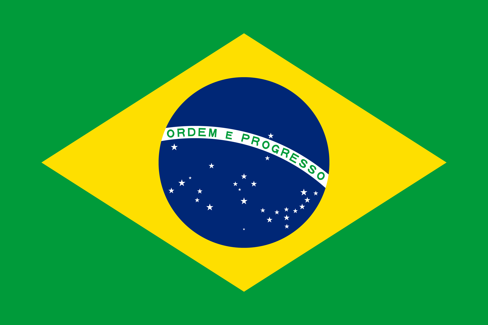
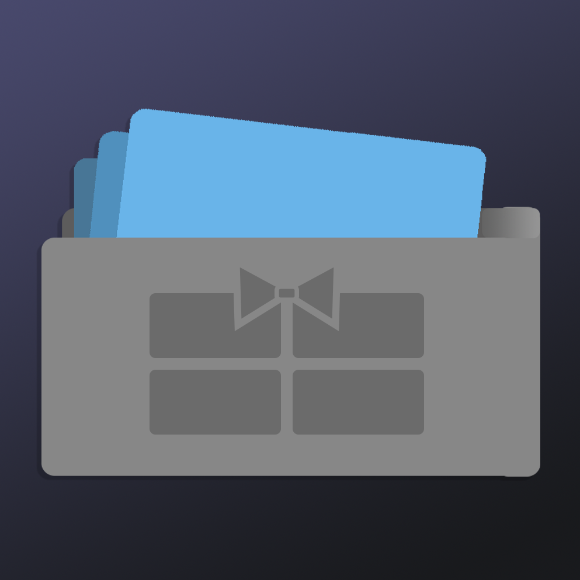
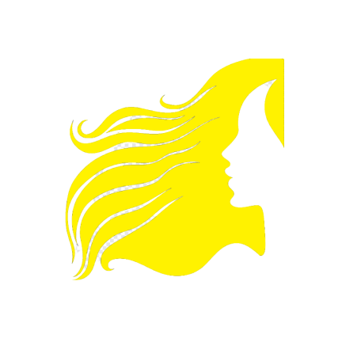

<!DOCTYPE html>
<html lang="pt-br"></html>

<head>
    <title>Jonas Costa - Projetos</title>
    <link rel="icon" href="../resources/vector_field.png">
    <link rel="stylesheet" href="../home_screen.css">
    <link rel="preconnect" href="https://fonts.googleapis.com">
    <link rel="preconnect" href="https://fonts.gstatic.com" crossorigin>
    <link href="https://fonts.googleapis.com/css2?family=Chakra+Petch:wght@300;700&display=swap" rel="stylesheet">
    <meta http-equiv=”Content-Type” content=”text/html; charset=utf-8″>
  </head>

  <body>

    <div class="sidenav">
        <div class="jonas_headshot">
            
        </div>
    

        <h1>Jonas Costa</h1>
        <div class="job">
            Desenvolvedor de Software
        </div>

        <div id="main_menu" class="main_menu">
            <a href="index.html">Página Principal</a>
            <a href="about_me.html">Sobre Mim</a>
            <a href="projects.html">Projetos</a>
            <a href="hobbies.html">Hobbies</a>
            <a href="contact.html">Contato</a>

            <div class="language">
                <a href="projects.html">
                    
                </a>
                
                <a href="../projects.html">
                    
                </a>
                
            </div>

        </div>

        

    </div>


    


  
    <!-- Page content -->
    <div class="main">
        <div class="title">
            <h2>Projetos</h2>
        </div>

        <div class="page_content">
            <p class="about_item_contents"> Esta página contém alguns dos meus trabalhos de design e desenvolvimento de software mais relevantes. Para obter mais informações sobre eles, ver outros projetos ou exemplos de código, consulte a minha página do <a class="resume_link" href="https://github.com/jonasccosta">GitHub</a>.</p>

            <div class="item_wrapper">
                <h3>CountOnMe</h3>
                
                <div>
                    <p>CountOnMe é o resultado da Macathon, uma competição anual de inovação e criatividade de 24 horas organizada pela minha faculdade. Meus colegas de equipe e eu projetamos um aplicativo disfarçado de calculadora que permite que vítimas de violência doméstica encontrem ajuda segura em momentos de crise. Eu projetei os aspectos técnicos, ajudei a conduzir a pesquisa de base e preparei a apresentação. O aplicativo ainda está em fase de design, mas já recebemos comentários positivos e fomos apresentados no <a class="resume_link" href="https://www.startribune.com/in-24-hour-marathon-macalester- students-devise-app-to-protect-domestic-violence-victims/600157319/">Star Tribune</a>.</p>
                </div>
            </div>
            
            <div class="item_wrapper">
                <h3>Card Safe</h3>
                
                <div>
                    <p>Na minha aula de Design e Desenvolvimento de Software, meus colegas de equipe e eu projetamos o Card Safe, um aplicativo móvel totalmente funcional que armazena cartões vale-presente. Ao longo de sete semanas, aprendi Flutter e Dart e os usei para criar o banco de dados que armazena os cartões, realizei testes de software e exploreo maneiras de usar APIs para criar o aplicativo. Como a aula era totalmente remota devido à pandemia do COVID-19, a maior parte do trabalho foi feita de forma assíncrona. </p>
                </div>
            </div>
            
            
            <div class="item_wrapper">
                <h3>Cabeleireira Leila</h3>
                
                <div><p>
                    Inspirado em um vídeo que viralizou em 2020 no Brasil, desenvolvi um aplicativo usando Java e Android Studio que permite aos clientes agendar consultas no cabeleireiro com a Cabeleireira Leila. Ele contém um portfólio de trabalhos anteriores de cabelo e unhas e envia um e-mail para o cliente com os detalhes da consulta. Embora eu o tenha construído de uma maneira bem-humorada, este aplicativo foi uma maneira interessante que encontrei para aprender o desenvolvimento nativo do Android. </p>    
                </div>
            </div>
            
            <div class="item_wrapper">
                <h3>Renegotiating Debts</h3>
                
                <div><p>
                    Meu primeiro projeto foi Renegotiating Debts. Eu o criei como minha Avaliação Interna para minha aula de Ciência da Computação quando ainda estava no Ensino Médio. Inspirado em um emprego anterior, o Renegotiating Debts é um software construído em Java que pretende substituir as planilhas que meu empregador usava para calcular os juros das dívidas de seus clientes. Com base na antiguidade e no valor da dívida, o software calcula os valores atualizados e as datas com base nas políticas da empresa. </p>    </div>
            </div>
            
            
            
            </div>
    </div>

    <script src="../script.js"></script>

</body>
